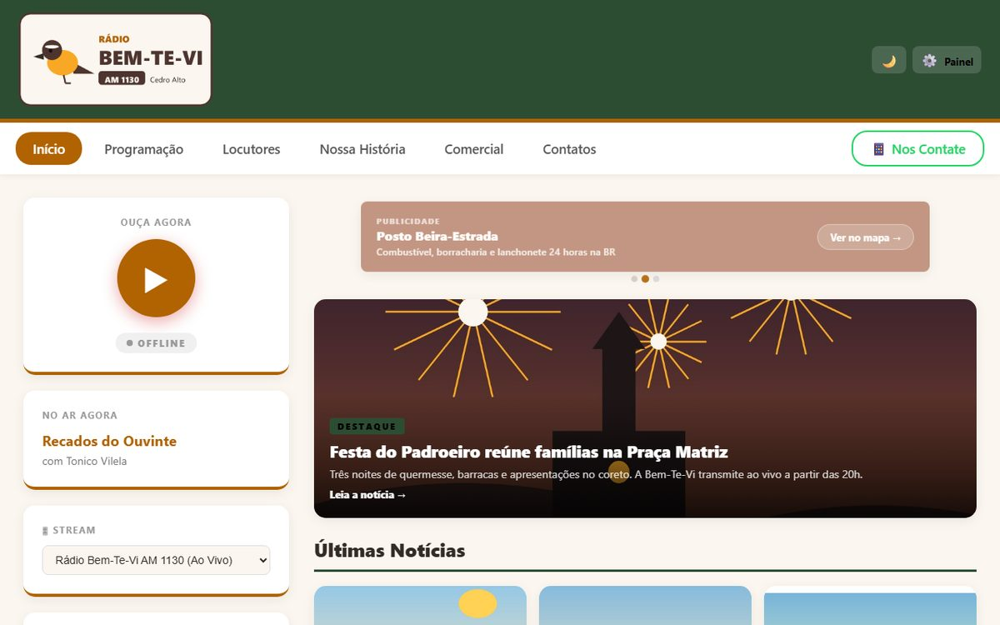

- Desenvolvimento
- Produto
Rádio Naoya
Plataforma que cria sites para rádios AM e FM
Cada rádio ganha um site com player ao vivo, programação, locutores, notícias e anunciantes. O dono edita tudo sozinho num painel, sem precisar de programador.
- Notícias com link próprio para compartilhar no WhatsApp
- Planos Grátis, Básico e Premium
- Regras de segurança no banco de dados para cada dono editar só a própria rádio
- React
- Vite
- Supabase
- PostgreSQL
- Vercel
- Stripe